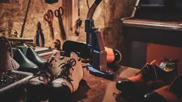
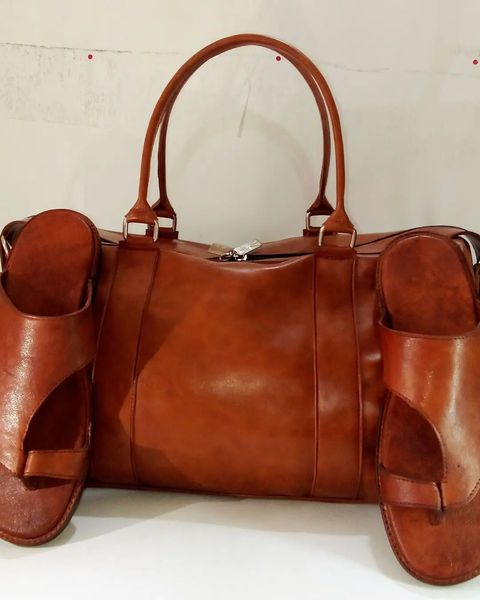
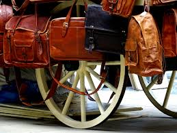

Get ready for an unforgettable experience as we take you on a thrilling Leatherwork designs Leatherworks, we believe that true luxury lies in the details. That’s why we source only the finest materials, ensuring that each piece is not only beautiful but also built to last.


Katchyway Services
History
Founded in 1995, our company has been providing thrilling Leatherwork designs for over 25 years. Our founder, Adam Inyang, was an avid craftsman who wanted to share his love of leatherwork designs with others. Luca was captivated by the textures and smells that wafted from his grandfather’s workshop. His grandfather, a master leatherworker, was known far and wide for his impeccable craftsmanship, turning raw hides into works of art that were both beautiful and functional. He started with just a few raw materials but quickly grew the business as the word spread about the incredible services we offer.
Over the years, we've expanded our operations to include high-quality leather goods including bags, wallets, belts, and accessories, and are seeking to become a leading brand in the leather industry, known for our craftsmanship, innovation, and commitment to sustainability